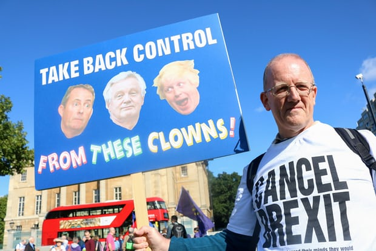

The Brexit protest has been a recent uprising in the United Kingdom, thus earning the name "Brexit" by combining the words "Britain" and "exit."
The uprising has been a protest from British citizens to leave the European Union, a supranational group of 28 nations in Europe.
In a nationwide referendum held in June 2016, the majority of the British people voted for this secession from the European Union.
Explore more on the general facts on Brtiain, the European Union, and the Brexit Movement.
 There is a significant history to the British wanting to not be part of the EU - for example, many British put their country first and do not even identify as European, just British.
The UK has many causes unto why the movement is so popular.
There is a significant history to the British wanting to not be part of the EU - for example, many British put their country first and do not even identify as European, just British.
The UK has many causes unto why the movement is so popular.
Explore more on the origins and causes of the Brexit Movement.

Even though a referendum has been passed on leaving the EU, there are many citizens of the UK that do not agree with the movement.
These protestors want another referendum to show that it was only so many people that wanted a secession, and that in reality
the majority of Britons want to stay in the EU for all the benefits it gives.
Explore more on the protests against the Brexit Movement.